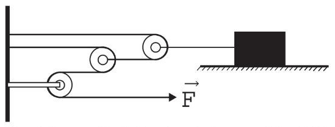
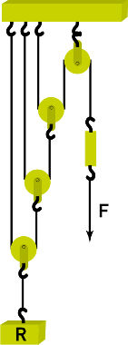

Lista de exercícios 2-14: Polias e máquinas de Atwood
DinâmicaLista 2-14
01.
A associação de polias pode oferecer vantagem mecânica para puxar ou içar objetos muito pesados. Quanto mais polias soltas forem colocadas no sistema, maior será a facilidade de executar a ação necessária. Marque a alternativa correta a respeito dos sistemas constituídos por polias.
a) A força feita para içar um determinado objeto será trinta e duas vezes menor, caso o número de polias soltas seja igual a 4.
b) A quantidade de polias fixas influencia na força feita sobre o sistema, assim, quanto mais polias fixas, menos força se faz sobre o sistema.
c) Cada polia fixa anula a ação de uma polia móvel, por isso um sistema de polias deve ter o menor número de polias soltas possível.
d) Os aparelhos de academia utilizam sistemas de polias soltas, assim, a força feita por uma pessoa corresponderá exatamente ao peso do objeto posto no aparelho.
e) Todas as alternativas anteriores estão incorretas.
02.
(ENEM-2016) Uma invenção que significou um grande avanço tecnológico na Antiguidade, a polia composta ou a associação de polias, é atribuída a Arquimedes (287 a.C. a 212 a.C.). O aparato consiste em associar uma série de polias móveis a uma polia fixa. A figura exemplifica um arranjo possível para esse aparato. É relatado que Arquimedes teria demonstrado para o rei Hierão um outro arranjo desse aparato, movendo sozinho, sobre a areia da praia, um navio repleto de passageiros e cargas, algo que seria impossível sem a participação de muitos homens. Suponha que a massa do navio era de 3 000 kg, que o coeficiente de atrito estático entre o navio e a areia era de 0,8 e que Arquimedes tenha puxado o navio com uma força, paralela à direção do movimento e de módulo igual a 400 N. Considere os fios e as polias ideais, a aceleração da gravidade igual a 10 m/s² e que a superfície da praia é perfeitamente horizontal.

O número mínimo de polias móveis usadas, nessa situação, por Arquimedes foi
03.
Um sistema de polias é constituído de modo que a força necessária para içar um objeto de 1 tonelada é dezesseis vezes menor. Quantas polias soltas existem nessa associação de polias?
04.
(UERJ) A figura abaixo representa um sistema composto por uma roldana com eixo fixo e três roldanas móveis, no qual um corpo R é mantido em equilíbrio pela aplicação de uma força F de uma determinada intensidade.

Considere um sistema análogo, com maior número de roldanas móveis e intensidade de F inferior a 0,1% do peso de R.
O menor número possível de roldanas móveis para manter esse novo sistema em equilíbrio deverá ser igual a:
05.
Determine o número mínimo necessário de roldanas móveis para elevar um objeto de 100 kg, de modo que a força feita corresponda a apenas 2% do peso total do objeto.
06.
Um engenheiro usa uma máquina para levantar um corpo de peso igual 64.000 N, capaz de fazer um esforço de até 2000 N. Para tanto, resolve utilizar uma associação de roldanas fixas e soltas. O número de roldanas soltas que deverá ser usado nessa configuração para que a máquina consiga levantar o corpo é de: